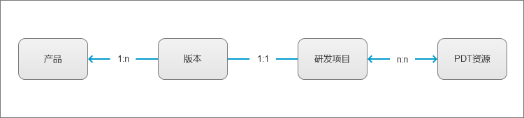

产品研发模式
产品经营
在介绍实际的产品研发模式之前，先对产品经营管理的内容进行说明，这样可以更好地推导出产品研发模式的基础。

上图所示，是产品经营中涉及到的几个关键概念，以及每个概念各自对应的领域，下面分别进行说明：
- 研发项目
- 在公司里，组织资源完成一个事情，都需要通过项目来完成，申请项目→分配资源→开展工作→结果验收→结项
- 产品研发工作也不例外，一个产品的每一个迭代，都需要立项，针对产品研发工作，有单独的项目类型：研发项目
- 产品研发相关的工作，都要归属于特定的研发项目中，目的是
通过项目成本来统计产品研发成本
- 产品型号
- 这个概念主要是针对产品售卖而提出的，在实际售卖产品时，都是以产品型号在进行售卖
- 产品型号由不同的软件、硬件、服务组成，例如：型号_1的组成为
3.0.0.1090版本软件、4GB内存、免费升级特征库 - 产品实际售卖产生的收入，都跟产品型号直接关联
- 产品
- 这个概念主要用于产品经营管理
- 一方面用于产品相关的资质证书管理
- 另一方面，它是连接成本（研发项目）和收入（产品型号）的桥梁，
通过产品可以直观分析产品的净收益
产品研发
产品版本和研发项目

基于前面的内容，我们已经清楚一个事实：产品研发工作，一定会通过申请研发项目的方式来组织。
实际的执行方案，如上图所示：
- 一个产品，会发布很多个版本
- 每个版本，都会对应唯一一个研发项目
说明：无论是标准主线版本，还是定制开发版本，都是按照这个规则来处理。
到这里，其实会发现，通过这样的方式，会导致流程很重，研发效率很低。
在实际执行时，有以下方法解决该问题：
- 研发项目分等级，等级越低，项目所需要执行的流程越简单
- 客户端产品通常一个版本的需求一起发布和交付，服务端产品则可以单个需求发布
产品研发人效主导的研发模式
在上面，我们看到了产品、版本、研发项目三个对象之间的关系，也基本清楚了产品研发实际是如何操作，但是这里面还没有涉及到人的参与，所以，还不算完整的研发模式。
在介绍人如何参与到产品研发之前，先介绍一下关于产品研发人效的一些内容，毕竟这个概念一度主导了公司的产品研发模式。
人效的定义
人效这个概念不难理解，就是：单位人力在单位时间内的产出。
通俗地讲：在公司内部，特指产品研发领域，一个员工在最小单位的标准工时内的工作产出。
- 研发领域的员工：主要指
产品经理、研发工程师、测试工程师这三个角色 - 最小单位的标准工时：一般是8小时（1天所要求的考勤时间）
- 工作产出：度量维度很多，代码行数、文档行数、用例数等
公司的目的
每个公司对于人效的要求是存在差异的，这跟公司所处的经营阶段和规模有关。
例如：公司计划上市，那么就需要提高公司的人效，达到外部审核要求。
提高人效
基于人效的定义，就可以很简单地得出一个结论，要提高公司人效，只要让员工做更多事情、工作更加饱和，就可以了。
但是，公司存在一个现状：每个产品的研发团队是固定的，产品的需求也不会持续处于旺盛的状态，所以，每个产品研发团队的工作其实并不会持续饱和。
- 需求旺盛的时候，产品研发团队工作较为饱和
- 需求不旺盛的时候，产品研发团队大部分员工的工作都不饱和
从公司经营的角度来看，这种情况导致了公司人效不高的情况发生，那么，公司就会通过一些经营策略来解决这个问题。
-
所有的产品经理、研发工程师、测试工程师，从业务线抽离，成立公共资源部门
-
业务线进行产品研发时，先进行项目申请，通过后再从公共资源部门分配研发资源
-
研发资源的分配，不是按人分配，而是人日，例如：员工A，投入项目A总计10人日、项目B总计10人日，只要实际投入不超过该计划就行，具体如何执行，依据项目实际情况来处理，一旦在项目A的投入达到了10人日，员工A便不再参与项目A
项目计划的最小单位是人日，也即：1人日，1个人投入1个工作日，至于这个工作日投入几个小时，不在考虑范围内。
基于这样的经营策略，公司的人效是否得到了提升呢？
- 在这样的经营模式下，产品研发领域的绝大部分员工，基本上都是同时并行多个项目，工作安排的很满、很饱和
- 如果工作无法按照项目计划来完成（这是个大概率事件），那么员工需要通过加班来完成
- 一个工作日，无论工作多长时间，都只按照标准工时8小时进行
核算统计，例如：员工A，1个工作日总计工作了12个小时（8标准工时+4加班工时），实际产出也是12个小时的产出，但是最终核算会把这12个小时的产出核算为8个小时的产出 排除员工加班的情况，人效相较此前，有提升；考虑到实际加班的情况，人效提升更多
基于这个原理，疫情期间，大部分员工从955变成了007，所以，公司统计得到结论：疫情期间，公司员工人效得到了空前的提升。
人效主导的研发模式

上图所示，就是公司最终稳定运行的研发模式：
- 产品的每个新版本都要进行立项
- 每个项目从公共资源池分配资源
- 每个研发资源同时参与多个产品项目的开发